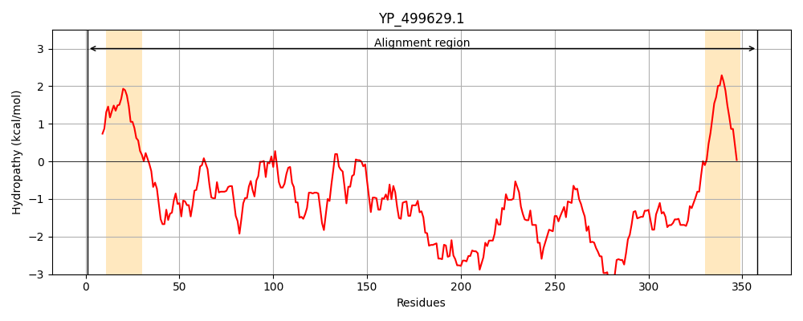
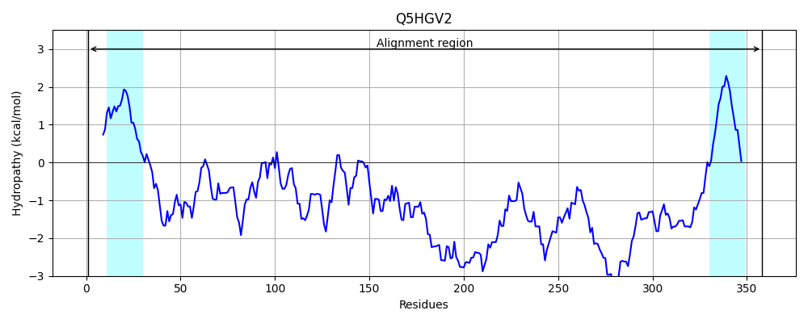
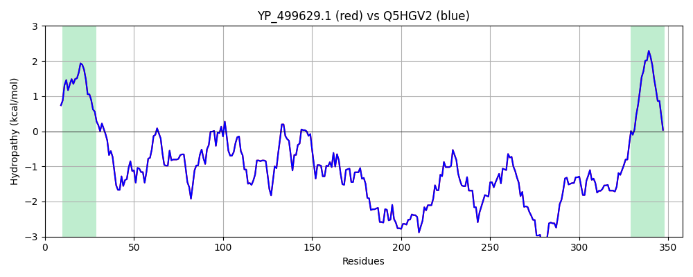

Hit Accession: Q5HGV2
Hit TCID: 3.A.1.14.17
Hit Description: gnl|BL_ORD_ID|14370 gnl|TC-DB|Q5HGV2|3.A.1.14.17 Putative uncharacterized protein isdD - Staphylococcus aureus (strain COL).
Mach Len: 358
e:0.000000
Query TMS Count : 2
Hit TMS Count: 2
TMS-Overlap Score: 2.000000
Predicted Substrates:CHEBI:5651;ferroheme b
BLAST Alignment:
Score: 1809 , Bit scores: 701 bits, E-value: 0.0e+00, Alignment length: 358, Percentage identity: 100
Query: 1 MRNVKQIATKSIIAIISLGILTYTTMIGSVLADEIKYPSAKFNQPEAKDKTELTTSIFDEKIKENKALELLIFNQENKNVTEEQQLVDEKAQLISDMTGKIYLQVKLKGQIDKEQLVFQNDKNEEFPFVIKDEKDDTIVRILIEQHMDKINMHVKTLAEKKNLDNKEMVYSIHFKEKKVQHDDAKEVPSKHQNQENNQDQLKKDIDDKKDSQKSDTKERRTSLFTEKGLNDIPVQKDKVQQDSNKKIENERPKASGTLKVENSPPTIKKVENNHKEQPKHKDEKSKKEKKKVVEKEKALPAFNRDDDSKNSSQLSSDIKELDEPNHKKQYMLFAAGIVLATILLISAHLYSRKRGNQV 358
MRNVKQIATKSIIAIISLGILTYTTMIGSVLADEIKYPSAKFNQPEAKDKTELTTSIFDEKIKENKALELLIFNQENKNVTEEQQLVDEKAQLISDMTGKIYLQVKLKGQIDKEQLVFQNDKNEEFPFVIKDEKDDTIVRILIEQHMDKINMHVKTLAEKKNLDNKEMVYSIHFKEKKVQHDDAKEVPSKHQNQENNQDQLKKDIDDKKDSQKSDTKERRTSLFTEKGLNDIPVQKDKVQQDSNKKIENERPKASGTLKVENSPPTIKKVENNHKEQPKHKDEKSKKEKKKVVEKEKALPAFNRDDDSKNSSQLSSDIKELDEPNHKKQYMLFAAGIVLATILLISAHLYSRKRGNQV
Sbjct: 1 MRNVKQIATKSIIAIISLGILTYTTMIGSVLADEIKYPSAKFNQPEAKDKTELTTSIFDEKIKENKALELLIFNQENKNVTEEQQLVDEKAQLISDMTGKIYLQVKLKGQIDKEQLVFQNDKNEEFPFVIKDEKDDTIVRILIEQHMDKINMHVKTLAEKKNLDNKEMVYSIHFKEKKVQHDDAKEVPSKHQNQENNQDQLKKDIDDKKDSQKSDTKERRTSLFTEKGLNDIPVQKDKVQQDSNKKIENERPKASGTLKVENSPPTIKKVENNHKEQPKHKDEKSKKEKKKVVEKEKALPAFNRDDDSKNSSQLSSDIKELDEPNHKKQYMLFAAGIVLATILLISAHLYSRKRGNQV 358 | Protein Hydropathy Plots: |
|---|
|  |  |
Pairwise Alignment-Hydropathy Plot:
|
|---|
|  |